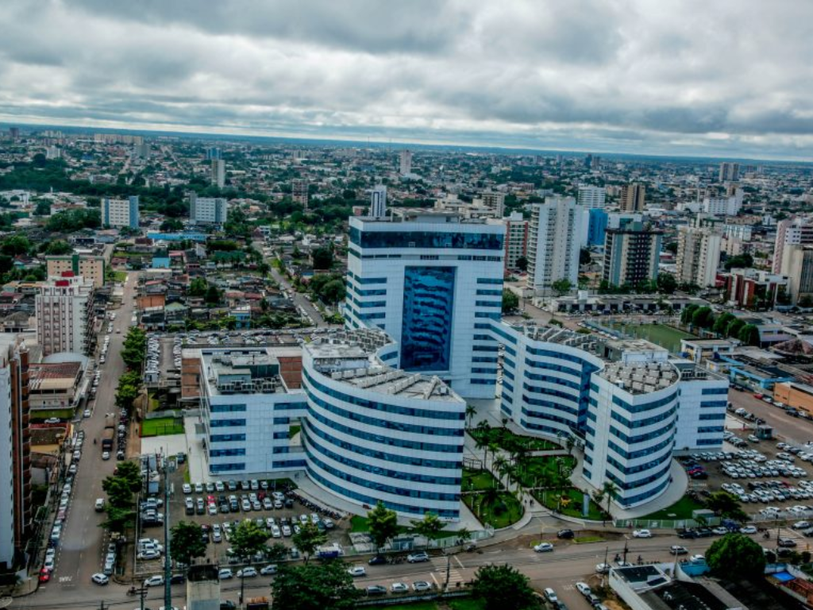

Rondônia é um estado localizado na região Norte do Brasil, fazendo fronteira com a Bolívia. Sua capital é Porto Velho. O estado é conhecido por sua história ligada à extração de borracha e à construção da Estrada de Ferro Madeira-Mamoré. A economia rondoniense é baseada na agropecuária, com destaque para a produção de soja, milho e carne bovina, além do extrativismo mineral.

Voltar